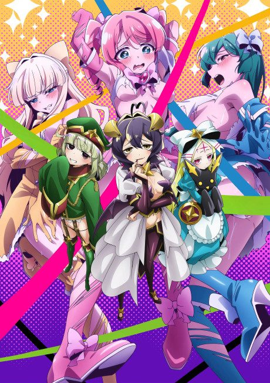
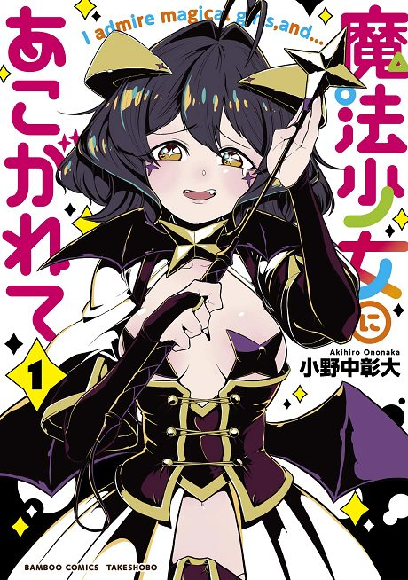

Gushing Over Magical Girls
魔法少女にあこがれて
Utena, a girl who adores magical girls, is given the power to transform, but into a villain, and finds she enjoys it.
After the anime, read the manga from Chapter 25.
7.4AniList score
—Animeter, no votes yet
13episodes
Rate it or report where you stopped
Is it worth pushing through?
Built from what visitors report across all 13 episodes.
Loading reports…Checking what other people said about this one.
Sign in above with your email to add your report.